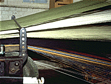
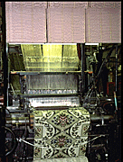
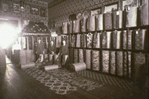

A Brief History of English Carpets,
and the Stourvale Mill
The
town of Kidderminster, Worcestershire, lies about 20 miles southwest
of Birmingham in the English industrial midlands. It has been a
center of weaving for many centuries, and in the mid - late
eighteenth century began to specialize in new forms of carpet
weaving, rightfully coming to be called the carpet capital of
Britain. The historic Stourvale Mill on Green Street was built in the
early 1850's under the guidance of Henry Woodward, who had started
his company in 1790, and who was joined by Benjamin Grosvenor to
operate the first steam powered carpet mill in Britain on the site.
The firm of Grosvenor Wilton Company Ltd. remains the major
weaver of Brussels and Wilton carpets, and is the only firm with a
complete design archive extant that covers over 200 years in business
and over 10,000 patterns. J.R. Burrows & Co. are the agents in
the United States for historic designs from this archive, which is
marketed as the "Stourvale Mill Collection."
Kidderminster
Carpets are a reversible flat weave carpet popular from the 18th
century to the early 20th century. This form of carpeting has no pile
and the pattern is shown in opposing colors on both faces, making it
possible to turn the carpet over when one side was worn or soiled. In
North America these carpets were commonly called Ingrain
Carpet. None are woven today in the town of Kidderminster, but
they are made still in small quantities in the United States,
including designs by William Morris.
Look at enlargement of Vine and Pomegranate
Kidderminster (Ingrain) Carpet
Axminster
Carpets are the main product of Kidderminster today, but this
product is a relative newcomer from the late 19th century. Taking the
name of an earlier form of hand-knotted rug (the finest and most
expensive English carpets), Chenille Axminsters, developed in 1839 by
James Templeton of Glasgow, simulated the rich quality of the
hand-knotted rugs and could weave room size seamless rugs (sadly,
these are no longer made anywhere). Spool and gripper Axminsters were
a later development that made a durable machine woven carpet with a
thick pile, but of a more modest expense than other woven carpets.
These are still made in large quantities for hotels, pubs, and
residential use. William Morris and C.F.A. Voysey were among the
famous designers who drew patterns for Axminster carpets.
Look at enlargement of Axminster
Carpet
Brussels
and Wilton carpets are today just a small percentage of the
overall production of the town of Kidderminster, in the early
19th
century they were the major product of the town. Brussels carpets are
a level loop carpet where the wool not exposed as pile is carried in
a dense backing - colors are drawn to the surface as needed for the
pattern, and up to five colors can be used in a single row. By
alternating colors, or 'planting the colors' in the rows, many more
accent colors can be skilfully introduced into the pattern. Brussels
carpets were first woven in the early 18th century, and by the late
18th century Kidderminster was the main center of production for
Brussels. Wilton carpets have the same structure as Brussels but the
pile is cut open and sheared, producing a velvet-like quality.
Although increased mechanization has equalized the pricing, in the
18th and 19th century the velvet pile of Wilton was roughly double
the cost of Brussels. During the Regency (in the U.S. the Federal
period)
Brussels carpets  were the height of luxury for all but the wealthiest homeowners, and
Wilton carpets were an extra luxury that few could afford. By the
mid-nineteenth century it became common to make the best showing with
a Wilton carpet in the best parlor or drawing room , and to use the
less expensive Brussels carpet in the lesser rooms of a dwelling. The
choice was a personal one, of taste and economy, and every visitor
would know instantly the the type of expense laid out in the
decorating by the quality of carpet.
were the height of luxury for all but the wealthiest homeowners, and
Wilton carpets were an extra luxury that few could afford. By the
mid-nineteenth century it became common to make the best showing with
a Wilton carpet in the best parlor or drawing room , and to use the
less expensive Brussels carpet in the lesser rooms of a dwelling. The
choice was a personal one, of taste and economy, and every visitor
would know instantly the the type of expense laid out in the
decorating by the quality of carpet.
|
|
The Young Trio by E.V. Rippingille, painted 1829, The
Bristol Art Gallery This room is fitted with wall-to-wall
Brussels or Wilton carpet in a Turkey pattern typical of
designs from the 1800 - 1820 period. A woolen drugget covers
the floor to protect the carpet from everyday household
activities.
|
|
|
|
Look at enlargement of Regency era Brussels
Carpet, c. 1812 (left)
Look at enlargement of Victorian era Wilton
Carpet, c. 1870 (right)
Merchants
brought Brussels, and later Wilton, carpets to the United States in
large quantites starting in the 1790's. Customers found the best
selection at major ports, such as Philadelphia, New York and Boston,
even after the domestic carpet industry developed in the second
quarter of the 19th century. Carpets, made up in 27" widths and
usually sewn together on site, were relatively easy luxuries to
transport, and the merchants in the largest cities offered the best
prices and the latest designs. An early view of a carpet showroom is
a trade card showing the W.P. Tenny Carpetings establishment in
Boston, Massachusetts, in the early 1850's. Clients are shown
inspecting carpet bales arranged around the room and down the center.
Each bale contains enough carpet to fit a modest size room
wall-to-wall, which was the most common practice. A later view shows
a turn-of-the-century showroom in Fall River, Massachusetts, where
the carpet selection shown includes Wilton, Brussels and Axminster in
the narrow 27" wide bales, and on the bottom level are Ingrain
(Kidderminster) carpets, which were woven at a 36" width.
Look at enlargement of A Fall River,
Massachusetts, carpet showroom
Wilton
and Brussels carpets remain one of the highest grades and longest
wearing of woven carpets. The revival of interest in these carpets is
largely due to today's fashion for period interiors, and the
continued efforts of museums and homeowners toward greater
authenticity of pattern, coloring and design in historic interior
design interpretation. The Stourvale Mill collection offers an
unparalled selection of historic Wilton and Brussels designs of the
late 18th, 19th and early 20th century.
Look at enlargement of W.P. Tenny & Co.
Picture
For a more detailed description of the history of carpet weaving,
see Floor Coverings for Historic Buildings by Helene von
Rosenstiel and Gail Caskey Winkler, Washington, D.C.: The
Preservation Press, 1988.
All carpet designs are Copyright of Grosvenor Wilton Company Ltd. and J.R. Burrows & Company.
Go to J.R. Burrows & Company Main Page
 J.R.
Burrows & Company
J.R.
Burrows & Company
P.O. Box 522
Rockland, Massachusetts 02370
E-mail:
merchant@burrows.com
Phone: (800) 347-1795; Phone: (781) 982-1812 Fax: (781) 982-1636